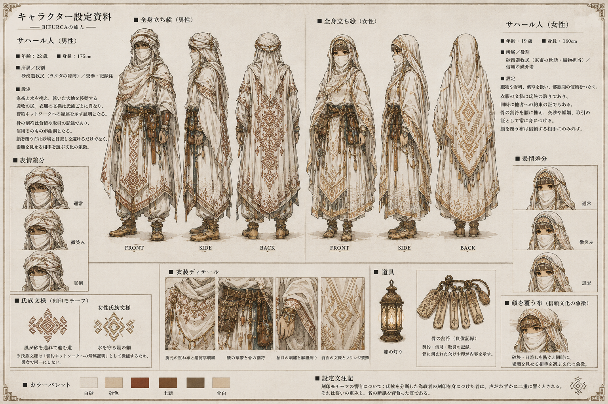

Dictionary / 第二部 — 民族・文化
サハール人
（さはーるじん） 固有名詞・民族

サハール人の都市 — 文字が刻まれた円形聖都
サハール人の信仰 — 月夜の砂漠での骨占い儀式

サハール人の衣装設定 — 隊商の男女と骨の割符
赤道西洋大陸の隊商文化民族。水資源管理・口頭法学・音楽文化が高度に発達した。客人歓待を核心とする相互扶助の文化を持つが、氏族連合の分断工作に対して脆弱という失政パターンを持つ。この脆弱性はビザンチン将軍問題として数理的に定式化された。世界をダル・カディム（審判の庭）と呼ぶ。
関連項目